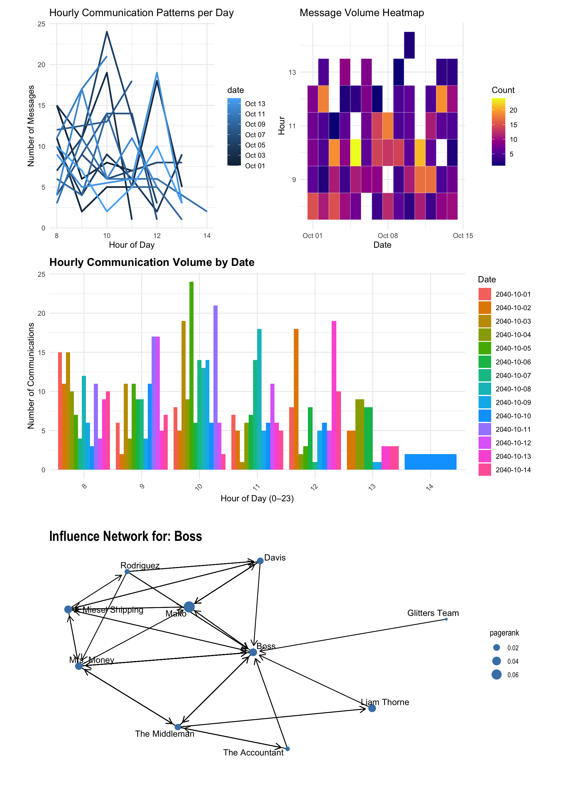

pacman::p_load(
jsonlite,
tidyverse,
ggtext,
knitr,
lubridate,
patchwork,
ggraph,
tidygraph,
igraph,
dplyr,
ggiraph
)Take-home Exercise 2
VAST Challenge 2025 Mini-Challenge 3
1 Overview
In this exercise, we will be tacking Mini-case 3 of VAST Challenge 2025.
1.1 Background
Over the past decade, the community of Oceanus has faced numerous transformations and challenges evolving from its fishing-centric origins. Following major crackdowns on illegal fishing activities, suspects have shifted investments into more regulated sectors such as the ocean tourism industry, resulting in growing tensions. This increased tourism has recently attracted the likes of international pop star Sailor Shift, who announced plans to film a music video on the island.
Clepper Jessen, a former analyst at FishEye and now a seasoned journalist for the Hacklee Herald, has been keenly observing these rising tensions. Recently, he turned his attention towards the temporary closure of Nemo Reef. By listening to radio communications and utilizing his investigative tools, Clepper uncovered a complex web of expedited approvals and secretive logistics. These efforts revealed a story involving high-level Oceanus officials, Sailor Shift’s team, local influential families, and local conservationist group The Green Guardians, pointing towards a story of corruption and manipulation.
My task is to develop new and novel visualizations and visual analytics approaches to help Clepper get to the bottom of this story.
1.2 Tasks and Questions
Clepper diligently recorded all intercepted radio communications over the last two weeks. With the help of his intern, they have analyzed their content to identify important events and relationships between key players. The result is a knowledge graph describing the last two weeks on Oceanus. Clepper and his intern have spent a large amount of time generating this knowledge graph, and they would now like some assistance using it to answer the following questions.
Clepper found that messages frequently came in at around the same time each day.
Develop a graph-based visual analytics approach to identify any daily temporal patterns in communications.
How do these patterns shift over the two weeks of observations?
Focus on a specific entity and use this information to determine who has influence over them.
Clepper has noticed that people often communicate with (or about) the same people or vessels, and that grouping them together may help with the investigation.
Use visual analytics to help Clepper understand and explore the interactions and relationships between vessels and people in the knowledge graph.
Are there groups that are more closely associated? If so, what are the topic areas that are predominant for each group?
- For example, these groupings could be related to: Environmentalism (known associates of Green Guardians), Sailor Shift, and fishing/leisure vessels.
It was noted by Clepper’s intern that some people and vessels are using pseudonyms to communicate.
Expanding upon your prior visual analytics, determine who is using pseudonyms to communicate, and what these pseudonyms are.
Some that Clepper has already identified include: “Boss”, and “The Lookout”, but there appear to be many more.
To complicate the matter, pseudonyms may be used by multiple people or vessels.
Describe how your visualizations make it easier for Clepper to identify common entities in the knowledge graph.
How does your understanding of activities change given your understanding of pseudonyms?
Clepper suspects that Nadia Conti, who was formerly entangled in an illegal fishing scheme, may have continued illicit activity within Oceanus.
Through visual analytics, provide evidence that Nadia is, or is not, doing something illegal.
Summarize Nadia’s actions visually. Are Clepper’s suspicions justified?
1.3 The Data
We will use the dataset provided by VAST Challenge.This report utilizes two core datasets: MC3_graph.json, which encodes the knowledge graph of communications, events, and relationships; and MC3_schema.json, which defines the structure, subtypes, and attributes of each node and edge type within the graph.
1.4 Methodology
2 Setup
2.1 Loading Packages
2.2 Importing data
data_g <- fromJSON("data/MC3_graph.json")
data_s <- fromJSON("data/MC3_schema.json")2.3 Data Overview
summary(data_g) Length Class Mode
directed 1 -none- logical
multigraph 1 -none- logical
graph 4 -none- list
nodes 31 data.frame list
edges 5 data.frame list glimpse(data_g)List of 5
$ directed : logi TRUE
$ multigraph: logi FALSE
$ graph :List of 4
..$ mode : chr "static"
..$ edge_default: Named list()
..$ node_default: Named list()
..$ name : chr "VAST_MC3_Knowledge_Graph"
$ nodes :'data.frame': 1159 obs. of 31 variables:
..$ type : chr [1:1159] "Entity" "Entity" "Entity" "Entity" ...
..$ label : chr [1:1159] "Sam" "Kelly" "Nadia Conti" "Elise" ...
..$ name : chr [1:1159] "Sam" "Kelly" "Nadia Conti" "Elise" ...
..$ sub_type : chr [1:1159] "Person" "Person" "Person" "Person" ...
..$ id : chr [1:1159] "Sam" "Kelly" "Nadia Conti" "Elise" ...
..$ timestamp : chr [1:1159] NA NA NA NA ...
..$ monitoring_type : chr [1:1159] NA NA NA NA ...
..$ findings : chr [1:1159] NA NA NA NA ...
..$ content : chr [1:1159] NA NA NA NA ...
..$ assessment_type : chr [1:1159] NA NA NA NA ...
..$ results : chr [1:1159] NA NA NA NA ...
..$ movement_type : chr [1:1159] NA NA NA NA ...
..$ destination : chr [1:1159] NA NA NA NA ...
..$ enforcement_type : chr [1:1159] NA NA NA NA ...
..$ outcome : chr [1:1159] NA NA NA NA ...
..$ activity_type : chr [1:1159] NA NA NA NA ...
..$ participants : int [1:1159] NA NA NA NA NA NA NA NA NA NA ...
..$ thing_collected :'data.frame': 1159 obs. of 2 variables:
.. ..$ type: chr [1:1159] NA NA NA NA ...
.. ..$ name: chr [1:1159] NA NA NA NA ...
..$ reference : chr [1:1159] NA NA NA NA ...
..$ date : chr [1:1159] NA NA NA NA ...
..$ time : chr [1:1159] NA NA NA NA ...
..$ friendship_type : chr [1:1159] NA NA NA NA ...
..$ permission_type : chr [1:1159] NA NA NA NA ...
..$ start_date : chr [1:1159] NA NA NA NA ...
..$ end_date : chr [1:1159] NA NA NA NA ...
..$ report_type : chr [1:1159] NA NA NA NA ...
..$ submission_date : chr [1:1159] NA NA NA NA ...
..$ jurisdiction_type: chr [1:1159] NA NA NA NA ...
..$ authority_level : chr [1:1159] NA NA NA NA ...
..$ coordination_type: chr [1:1159] NA NA NA NA ...
..$ operational_role : chr [1:1159] NA NA NA NA ...
$ edges :'data.frame': 3226 obs. of 5 variables:
..$ id : chr [1:3226] "2" "3" "5" "3013" ...
..$ is_inferred: logi [1:3226] TRUE FALSE TRUE TRUE TRUE TRUE ...
..$ source : chr [1:3226] "Sam" "Sam" "Sam" "Sam" ...
..$ target : chr [1:3226] "Relationship_Suspicious_217" "Event_Communication_370" "Event_Assessment_600" "Relationship_Colleagues_430" ...
..$ type : chr [1:3226] NA "sent" NA NA ...nodes <- data_g$nodes
edges <- data_g$edges3 Data Wrangling
nodes <- nodes %>%
mutate(
timestamp = ymd_hms(timestamp, quiet = TRUE),
date = as.Date(timestamp),
start_date = ymd(start_date, quiet = TRUE),
end_date = ymd(end_date, quiet = TRUE),
submission_date = ymd(submission_date, quiet = TRUE),
hour = hour(timestamp),
weekday = wday(timestamp, label = TRUE)
)
comm_nodes <- nodes %>%
filter(sub_type == "Communication", !is.na(timestamp))plot
# pp1：折线图 - 每天每小时通信趋势
pp1 <- comm_nodes %>%
count(date, hour) %>%
ggplot(aes(x = hour, y = n, group = date, color = date)) +
geom_line(size = 1) +
labs(title = "Hourly Communication Patterns per Day",
x = "Hour of Day", y = "Number of Messages") +
theme_minimal()
# pp2：热图 - 每天每小时通信数量
pp2 <- comm_nodes %>%
count(date, hour) %>%
ggplot(aes(x = date, y = hour, fill = n)) +
geom_tile(color = "white") +
scale_fill_viridis_c(option = "C") +
labs(title = "Message Volume Heatmap",
x = "Date", y = "Hour", fill = "Count") +
theme_minimal()
# pp3：柱状图 - 每小时通信数量（不同日期）
hourly_counts <- comm_nodes %>%
group_by(date, hour) %>%
summarise(count = n(), .groups = "drop")
pp3 <- ggplot(hourly_counts, aes(x = factor(hour), y = count, fill = factor(date))) +
geom_bar(stat = "identity", position = "dodge") +
labs(
title = "Hourly Communication Volume by Date",
x = "Hour of Day (0–23)",
y = "Number of Communications",
fill = "Date"
) +
theme_minimal() +
theme(
plot.title = element_text(size = 14, face = "bold"),
axis.text.x = element_text(angle = 45, hjust = 1)
)
# pp4：影响力网络图
sent_edges <- edges %>%
filter(type == "sent") %>%
select(source_entity = source, event = target)
received_edges <- edges %>%
filter(type == "received") %>%
select(event = source, target_entity = target)
comm_edges <- sent_edges %>%
inner_join(received_edges, by = "event") %>%
select(source = source_entity, target = target_entity)
entity_nodes <- nodes %>%
filter(type == "Entity") %>%
select(id, label)
comm_graph <- tbl_graph(nodes = entity_nodes, edges = comm_edges, directed = TRUE) %>%
mutate(
degree = centrality_degree(mode = "in"),
pagerank = centrality_pagerank()
)
focus_entity <- "Boss"
focus_index <- which(V(comm_graph)$label == focus_entity)
ego_graph <- make_ego_graph(comm_graph, order = 1, nodes = focus_index, mode = "all")[[1]]
pp4 <- ggraph(ego_graph, layout = "kk") +
geom_edge_link(arrow = arrow(length = unit(3, 'mm')), end_cap = circle(3, 'mm')) +
geom_node_point(aes(size = pagerank), color = "steelblue") +
geom_node_text(aes(label = label), repel = TRUE) +
labs(title = paste("Influence Network for:", focus_entity)) +
theme_graph()(pp1+pp2)/pp3/pp4